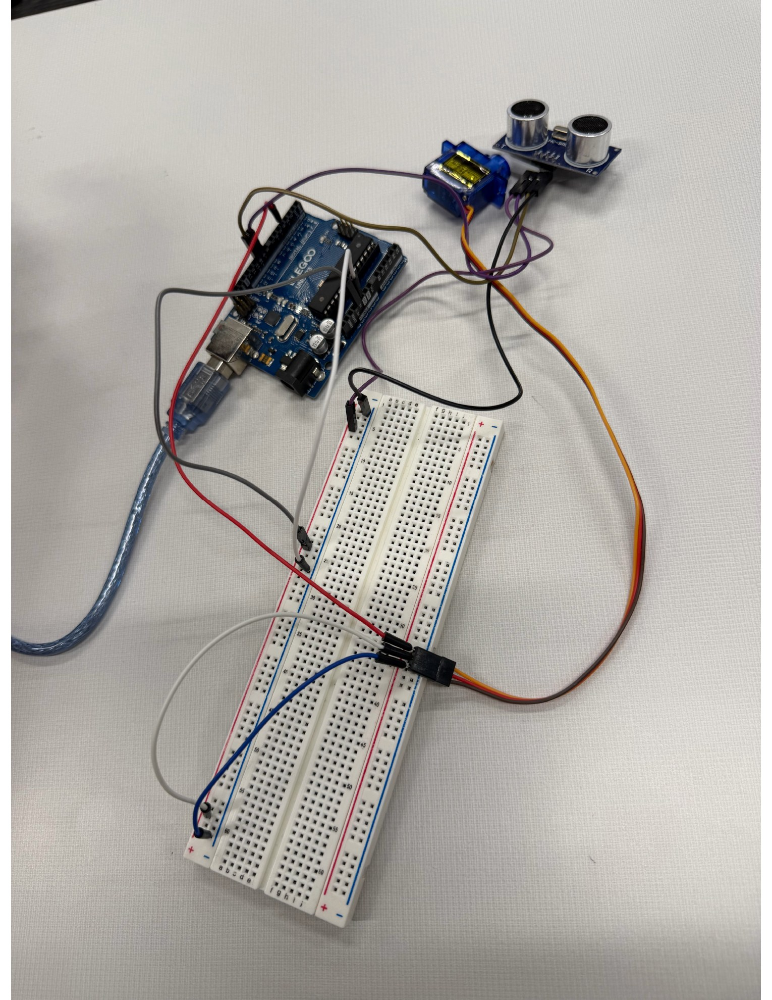
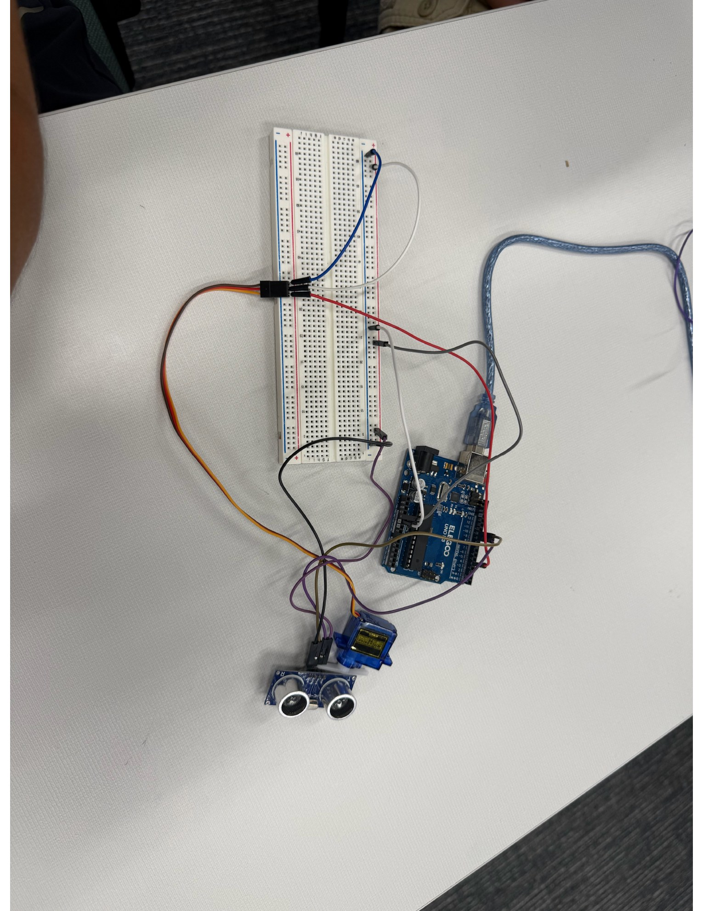
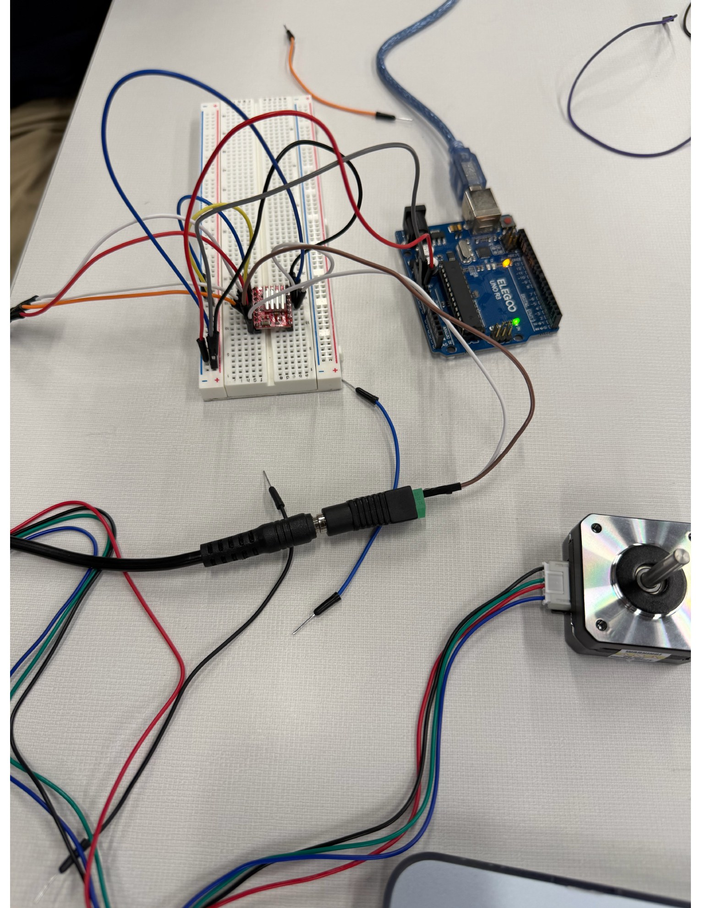
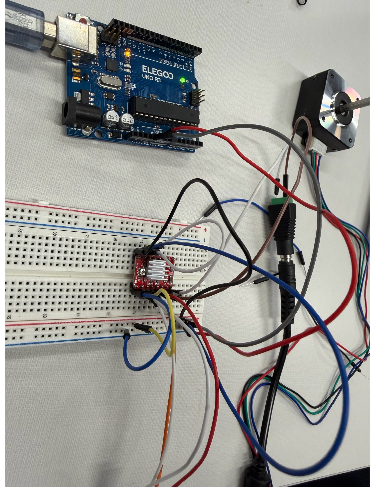

Innovator Journal
Simple Spinning Scanner
Building a minimum testable prototype for a future 3D scanner, beginning with an ultrasonic sensor and servo and progressing toward more precise rotation with a stepper motor.
Stage 1 — The Idea
Starting With the Museum's 3D Scanner
This project started after seeing a professional 3D scanner at the museum. The scanner we saw was much more advanced than anything we could realistically build right now. It could capture the shape of an object and turn those measurements into a detailed digital 3D model.
Instead of trying to copy the entire museum scanner at once, our goal is to work toward it through smaller prototypes. The comparison we used was that the museum scanner is like a sports car, while our first scanner is more like a skateboard. The simpler version does not need every feature of a professional scanner. It only needs to test one important idea successfully.
The museum scanner uses much more advanced methods involving projected light, cameras, calibration, and software. Our scanner simplifies the same general problem by focusing first on controlled movement and distance sensing.
Stage 2 — First Prototype
Beginning With a Servo Motor
My first version used a servo motor with an ultrasonic sensor. I had already worked with the ultrasonic sensor before, so this let me build on something familiar while introducing movement into the system.

The servo's job is to change the direction that the ultrasonic sensor is facing. Instead of measuring only what is directly in front of it, the sensor can rotate to different angles and take a distance measurement at each position.
This is an important step toward a scanner because a scanner needs more than one measurement. If the sensor stays still, it only gives one distance in one direction. Rotating the sensor lets it begin collecting information from multiple directions.

What I learned from the servo
The servo was useful because it made the idea of a spinning scanner much easier to understand. I could think of each position as an angle. The Arduino could move the sensor to an angle, take a distance measurement, move again, and repeat the process.
This helped me understand that the scanner is really combining two pieces of information: where the sensor is pointing and how far away the object is.
Stage 3 — Changing the Design
Moving From a Servo to a Stepper Motor
After experimenting with the servo, the next step was switching to a stepper motor. Both motors create movement, but they are controlled in different ways.
Servo Motor
A servo is useful when I want to tell the motor to move to a particular angle. This made it a good starting point because controlling its position was relatively simple.
Stepper Motor
A stepper motor moves in small individual steps. By controlling how many steps the motor takes, I can control its rotation in smaller and more repeatable increments.
For a scanner, that extra control is useful because I eventually want the program to know exactly how much the sensor rotates between measurements. The more predictable the movement is, the easier it becomes to match a distance measurement with a position.
Stage 4 — Current Progress
Building the Stepper Motor Circuit
Switching to the stepper motor also made the circuit more complicated. Unlike the small servo setup, the stepper motor needs additional hardware to control the current going to its coils. This meant adding a motor-driver board and making more connections between the Arduino, breadboard, motor, and power.

At this stage, the build was still a work in progress. There were more wires to keep track of than in the servo version, so understanding which connections controlled the motor and which supplied power became especially important.
This part of the project showed me that improving one part of a design can also introduce new problems. The stepper motor gives me more control over rotation, but it requires a more complicated circuit.

I am currently working toward getting the stepper motor to rotate reliably through controlled steps. Once that works consistently, the next challenge will be combining that movement with the distance sensor so that every measurement can be connected to a specific angle.
Stage 6 — Next Steps
Where the Scanner Goes From Here
The current goal is still a simple spinning 2D scanner. I first need the stepper motor to move reliably and then need to connect the ultrasonic sensor so that it takes measurements as the motor rotates.
After the 2D scanner works, the project can become more complex. A future version could add movement in another direction or collect more detailed measurements so that the system begins building a 3D representation instead of only a flat 2D scan.